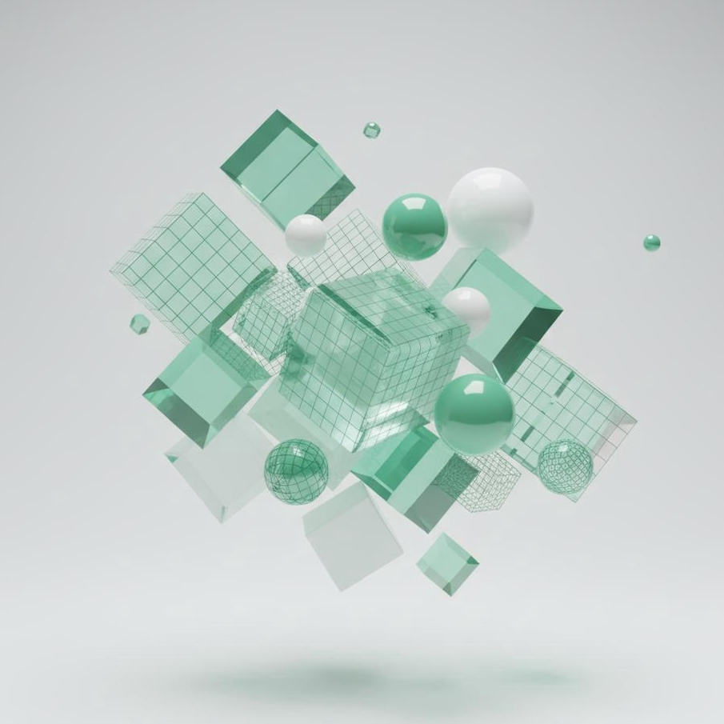

Interactive Web Development
Creating responsive websites using semantic HTML, modern CSS, and JavaScript while focusing on accessibility and usability.
Interactive Media & Game Design Student
I create websites, game prototypes, and interactive experiences that combine technology, creativity, and user‑centred design. Currently studying Interactive Media at the University of the Witwatersrand.

I'm an Interactive Media and Game Design student at the University of the Witwatersrand. My interests lie in web development, game design, and interactive storytelling.
Through academic and personal projects, I enjoy creating digital experiences that combine creativity, usability, and technical problem‑solving.
Learn More About Me →What I bring to every project
HTML, CSS, JavaScript, responsive design and accessibility.
Unity, C#, gameplay systems and prototyping.
User‑centred interfaces, wireframes and usability principles.
Photoshop, Illustrator, Figma and digital design workflows.
Storytelling, information architecture and multimedia design.
Team projects, documentation and version control.
Areas of technology and design that I'm actively developing through my studies and personal projects.
Creating responsive websites using semantic HTML, modern CSS, and JavaScript while focusing on accessibility and usability.
Building game mechanics, level concepts, and interactive systems using Unity and C#.
Designing intuitive interfaces through wireframing, prototyping, and user‑centred design principles.
Developed a branching narrative website exploring user choice and nonlinear storytelling.
Designed and implemented a playable game prototype, focusing on player progression and engagement.
Conducted usability evaluations and developed interface improvements based on user feedback.
I believe successful digital experiences sit at the intersection of functionality, accessibility, and creativity. Whether I am designing a website, building a game prototype, or developing an interactive experience, I aim to create products that are intuitive, engaging, and meaningful.
My goal is to bridge technical development with thoughtful design to create experiences that people genuinely enjoy using.
University of the Witwatersrand (2023 – present)
Focusing on web development, interaction design, digital storytelling and game development.
I'm open to graduate opportunities, internships, and collaborative projects.
Get In Touch →